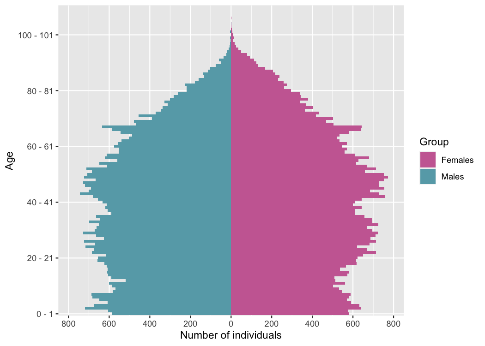
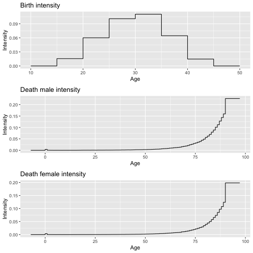
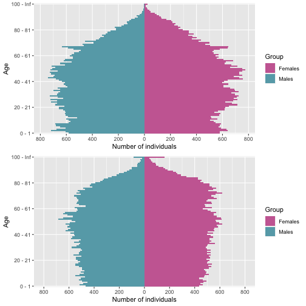
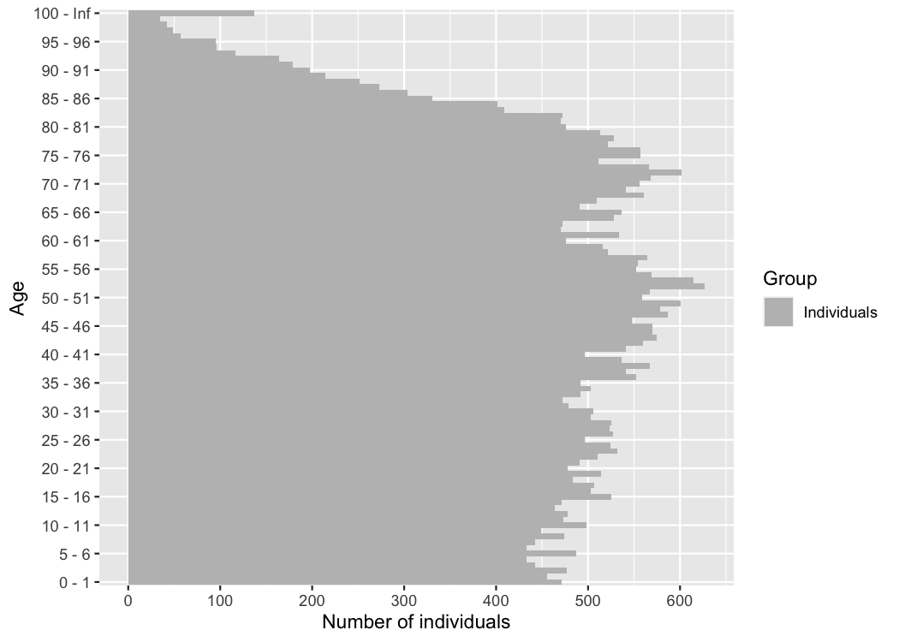
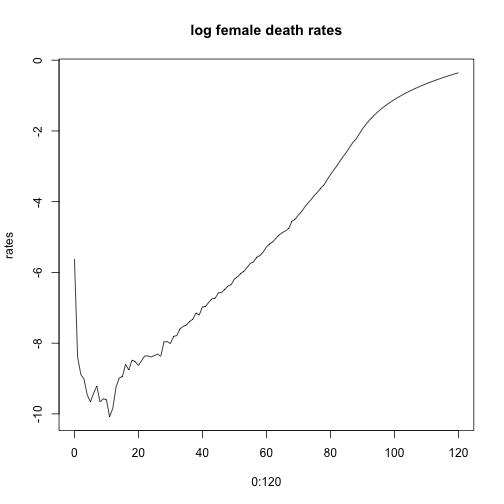
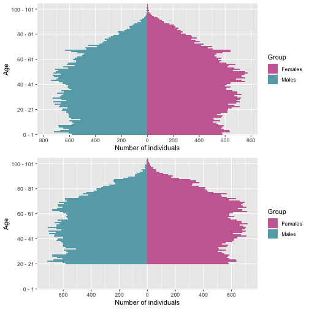
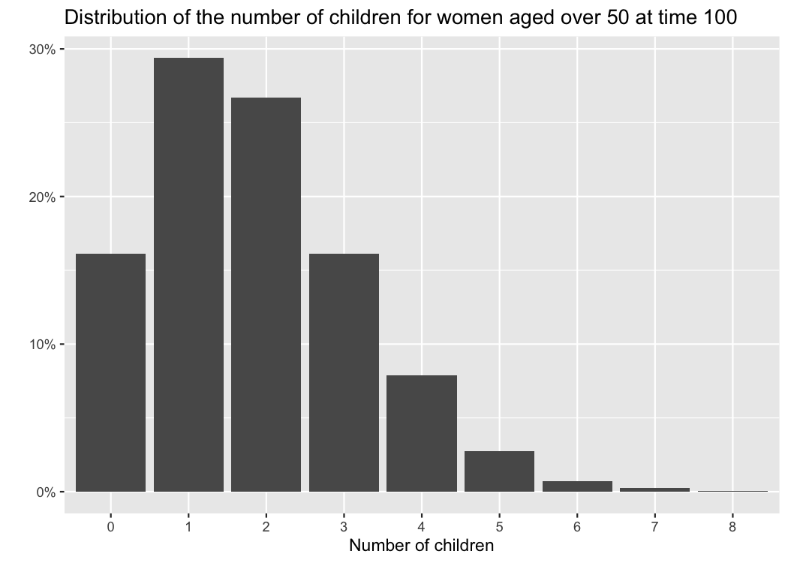
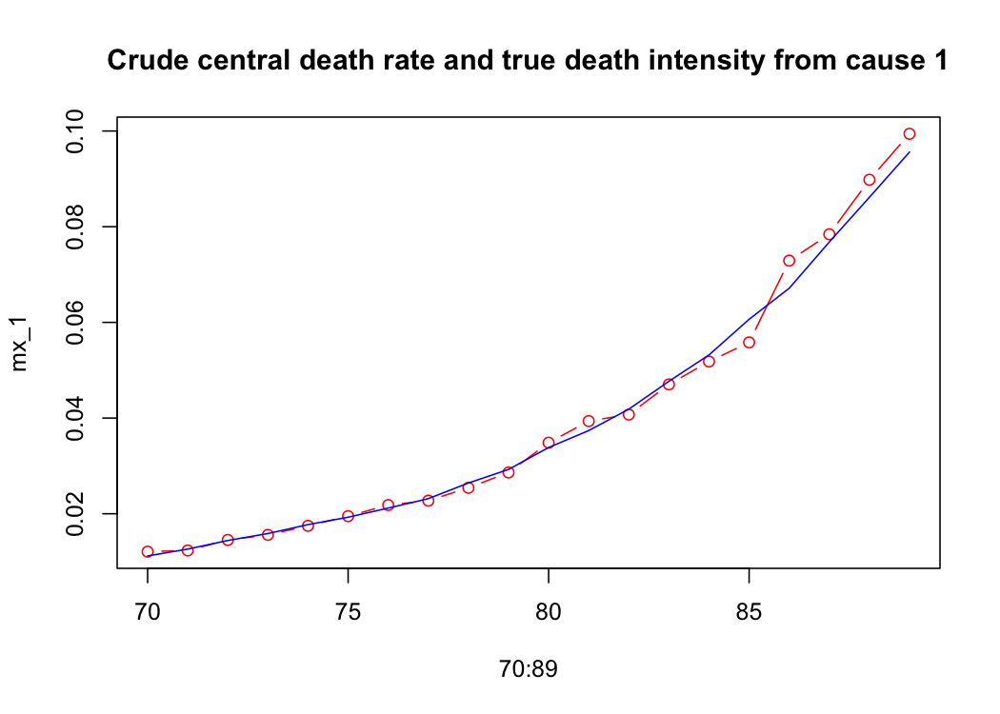

Human population
Daphné Giorgi, Sarah Kaakai, Vincent Lemaire
Source:vignettes/IBMPopSim_human_pop.Rmd
IBMPopSim_human_pop.RmdThis document provides a first simple example of usage of the package IBMPopSim, for simulating a human population with birth and death events. See vignette('IBMPopSim') for a detailed presentation of the package.
1 Example description
We consider a population in which individuals are characterized by their age and gender (male or female).
Individuals can give birth (only if female) or die. Birth and death intensities depend on the individuals’ age and gender, but stay constant over time. In this toy model, birth and death intensities are fitted to England and Wales’ 2014 birth and death rates (source: Office for National Statistics).
2 Population creation
The initial population is a 100 000 individuals population sampled from England and Wales’ 2014 age pyramid distribution (source: Office for National Statistics).
str(EW_pop_14) ## List of 3 ## $ age_pyramid:'data.frame': 232 obs. of 3 variables: ## ..$ age : Factor w/ 116 levels "0 - 1","1 - 2",..: 1 1 2 2 3 3 4 4 5 5 ... ## ..$ male : logi [1:232] FALSE TRUE FALSE TRUE FALSE TRUE ... ## ..$ value: num [1:232] 323863 340320 332357 350346 344972 ... ## $ rates :List of 3 ## ..$ birth :'data.frame': 7 obs. of 2 variables: ## .. ..$ age : num [1:7] 15 20 25 30 35 40 45 ## .. ..$ value: num [1:7] 0.0156 0.0601 0.1008 0.1104 0.0645 ... ## ..$ death_male :'data.frame': 91 obs. of 2 variables: ## .. ..$ age : int [1:91] 0 1 2 3 4 5 6 7 8 9 ... ## .. ..$ value: num [1:91] 4.03e-03 3.60e-04 1.52e-04 1.35e-04 7.73e-05 ... ## ..$ death_female:'data.frame': 91 obs. of 2 variables: ## .. ..$ age : int [1:91] 0 1 2 3 4 5 6 7 8 9 ... ## .. ..$ value: num [1:91] 0.003634 0.000226 0.000139 0.000121 0.000078 ... ## $ sample :'data.frame': 100000 obs. of 3 variables: ## ..$ birth: num [1:100000] -107 -107 -105 -104 -104 ... ## ..$ death: num [1:100000] NA NA NA NA NA NA NA NA NA NA ... ## ..$ male : logi [1:100000] FALSE FALSE TRUE FALSE FALSE FALSE ...
plot_population(EW_pop_14$sample)

3 Model parameters
params <- with(EW_pop_14$rates, list("p_male" = 0.512, # probability to give birth to a male. "birth_rate" = stepfun(x=birth[,"age"], y=c(0,birth[,"value"])), "death_male" = stepfun(x=death_male[,"age"], y=c(0,death_male[,"value"])), "death_female" = stepfun(x=death_female[,"age"], y=c(0,death_female[,"value"])) ) )
lbl = labs(x="Age", y="Intensity") thm = theme(plot.title = element_text(hjust = 0.5)) grid.arrange( autoplot(params$birth, shape = NULL) + ggtitle("Birth intensity") + lbl, autoplot(params$death_male, shape = NULL) + ggtitle("Death male intensity") + lbl, autoplot(params$death_female, shape = NULL) + ggtitle("Death female intensity") + lbl )

4 Events creation
There are 2 possible events :
- Birth
- Death
Both event intensities are of type individual, which means that the intensity at which an individual gives birth or dies only depends on his age and characteristics, and not on other individuals characteristics (in other word, there are no interactions).
The birth and the death intensities are bounded step functions, which are constant over time.
Birth event creation
birth_event <- mk_event_individual( type = "birth", intensity_code = "if (I.male) result = 0; else result = birth_rate(age(I, t));", kernel_code = "newI.male = CUnif(0, 1) < p_male;" # Newborn is male with probability p_male )
Death event creation
death_event <- mk_event_individual( type = "death", intensity_code = "result = (I.male) ? death_male(age(I, t)) : death_female(age(I, t));" )
5 Model creation and simulation
5.1 Model creation
model <- mk_model( characteristics = get_characteristics(EW_pop_14$sample),# Characteristics names ant type events = list(birth_event, death_event), # Model events parameters = params # Model parameters ) summary(model) ## Events: ## #1: individual event of type birth ## #2: individual event of type death ## --------------------------------------- ## Individual description: ## names: birth death male ## R types: double double logical ## C types: double double bool ## --------------------------------------- ## R parameters available in C++ code: ## names: p_male birth_rate death_male death_female ## R types: double closure closure closure ## C types: double function_x function_x function_x
Computation of event intensity bounds (needed for acceptance/rejection algorithm)
5.2 Simulation of the population over 50 years
sim_out <- popsim(model = model, population = EW_pop_14$sample, # Initial population #Vector of intensity bounds, with name corresponding to events name: events_bounds = c('birth' = birth_max, 'death' = death_max), parameters = params, time = 50, age_max = 120, multithreading = TRUE) ## Simulation on [0, 50]
Simulation logs
sim_out$logs ## proposed_events effective_events cleanall_counter ## 1.678206e+06 1.129520e+05 6.000000e+00 ## duration_main_algorithm ## 3.413000e-02
The ratio of accepted events is
sim_out$logs[["effective_events"]] / sim_out$logs[["proposed_events"]] ## [1] 0.06730521
Outputs
sim_out$population is a data frame composed of all individuals who lived in the population over the period \([0,50]\) (individuals in the initial population and born during the simulation period).
Each line corresponds to an individual, with his date of birth, date of death (NA if still alive at the end of the simulation) and gender.
The function ?age_pyramid computes the age pyramid of a population data frame at a given time.
pyr_init = age_pyramid(sim_out$population, time = 0,ages = c(0:100,Inf)) pyr = age_pyramid(sim_out$population, time = 50, ages=c(0:100,Inf)) grid.arrange(plot_pyramid(pyr_init), plot_pyramid(pyr,value_breaks = seq(0,800,200)))

Female age pyramid at t=50
plot_pyramid(pyr[pyr$male==FALSE,c("age","value")], age_breaks = as.integer(seq(1,101,5)))

?age_pyramids (plural) returns a data frame representing the population age pyramids at different times.
#pyrs = age_pyramids(sim_out$population, time = 1:50)
#library(gganimate)
#plot_pyramid(pyrs) + transition_time(time) + labs(title = "Time: {frame_time}")6 Different simulations with the same model
6.1 Change of initial population
The population evolution can be simulated starting from a different initial population, without having to recompile the model.
pop_sample_1e6 <- popsample(EW_pop_14$age_pyramid, size = 1e6)
plot_population(pop_sample_1e6)

sim_out <- popsim(model = model, population = pop_sample_1e6, # Initial population events_bounds = c('birth' = birth_max, 'death' = death_max), parameters = params, time = 50, age_max = 120, multithreading = TRUE) ## Simulation on [0, 50]
sim_out$logs ## proposed_events effective_events cleanall_counter ## 1.679795e+07 1.134136e+06 6.000000e+00 ## duration_main_algorithm ## 4.674200e-01
6.2 Modify an intensity
Events intensities and/or kernels can be modified without recompiling the model, simply by changing the parameters value.
In the first toy model, mortality rates are assumed to be constant after age 90, with a maximum age of 120 in the population. This leads to a significant increase in the number of individuals of age over 100, even though mortality rates don’t change over time in this model.
A more realistic assumption is to assume that mortality rates increase after age 90, by changing the model parameters death_male and death_female. The two step functions are replaced by functions of type ?piecewise_x (see documentation), composed of a step function before age 90 and a linear function after for older ages.
death_male_90 <- params$death_male old_death_male <- linfun(x = c(89,120), y = c(death_male_90(89), 0.7)) #?linfun params$death_male <- piecewise_x(c(89), list(death_male_90,old_death_male)) death_female_90 <- params$death_female old_death_female <- linfun(x = c(89,120), y = c(death_female_90(89), 0.7)) params$death_female <- piecewise_x(c(89), list(death_female_90,old_death_female))

Once the new model parameters have be defined, the event bounds must be updated.
sim_out_lin <- popsim(model = model, population = pop_sample_1e6, # Initial population events_bounds = c('birth' = birth_max, 'death' = 0.7), parameters = params, time = 50, age_max = 120) ## Simulation on [0, 50]
The modification of the shape of mortality rates for ages over 90 generates a decrease of about 10% (depending on the simulation) in the individuals aged over 100 after 50 years of simulation.
pop_size_90plus_const <- nrow(population_alive(sim_out$population,t = 50,a1=90)) pop_size_90plus_lin <- nrow(population_alive(sim_out_lin$population,t = 50,a1=90)) (pop_size_90plus_const-pop_size_90plus_lin)/pop_size_90plus_const*100 ## [1] 5.392585
6.3 Deactivate an event
An event can be deactivated by setting the event bound to 0.
sim_out <- popsim(model = model, population = EW_pop_14$sample, events_bounds = c('birth' = 0, 'death' = death_max), parameters = params, age_max = 130, time = 50) ## [1] "event birth is deactivated" ## Simulation on [0, 50]
The age pyramid can be directly plotted from the population data frame with ?plot_population
grid.arrange( plot_population(sim_out$population, time=0, ages= 0:105), plot_population(sim_out$population, time=20, ages= 0:105) )

age_pyramid(sim_out$population, ages = seq(70,90,10), time = 30) ## age male value ## 1 70 - 80 FALSE 5804 ## 2 70 - 80 TRUE 5053 ## 3 80 - 90 FALSE 3677 ## 4 80 - 90 TRUE 2812
7 Addition of “number of children” characteristic
The number of children by women can be recorded by adding a new characteristic (here named children) and changing the birth event kernel code.
chi <- get_characteristics(EW_pop_14$sample) chi <- c(chi, 'children' = 'int') # Addition of characteristic "chi"
Birth event with children count
new_birth_event <- mk_event_individual( type = "birth", name ="birth_child", intensity_code = "if (I.male) result = 0; else result = birth_rate(age(I, t));", kernel_code = " newI.male = CUnif(0, 1) < p_male; newI.children = 0; //When birth occur, I.children is increased of 1 I.children += 1;" )
model_child <- mk_model( characteristics = chi, events = list(new_birth_event, death_event), parameters = params ) summary(model_child) ## Events: ## #1: individual event of type birth ## #2: individual event of type death ## --------------------------------------- ## Individual description: ## names: birth death male children ## R types: double double logical integer ## C types: double double bool int ## --------------------------------------- ## R parameters available in C++ code: ## names: p_male birth_rate death_male death_female ## R types: double closure closure closure ## C types: double function_x function_x function_x
init_pop <- cbind(EW_pop_14$sample, "children"=0) head(init_pop) ## birth death male children ## 1 -106.9055 NA FALSE 0 ## 2 -106.8303 NA FALSE 0 ## 3 -104.5097 NA TRUE 0 ## 4 -104.2218 NA FALSE 0 ## 5 -103.5225 NA FALSE 0 ## 6 -103.3644 NA FALSE 0
sim_out <- popsim(model_child, population = init_pop, events_bounds = c('birth_child' = birth_max, 'death' = death_max), parameters = params, time = 100, age_max = 120, multithreading=TRUE) ## Simulation on [0, 100]
# Females of age over 50 alive at time 100: pop_female_time <- population_alive(subset(sim_out$population, male == F), t= 100, a1= 50) dim(pop_female_time)[1]# Number of females over 50 ## [1] 17077

mean(pop_female_time$children) #Mean number of children ## [1] 1.82901
8 Addition of “cause of death” characteristics
In order to model different competing causes of death, several death events can be created, each modelling one cause of death.
8.1 Model with two independent causes of death
Individuals can die from two main causes of death 1 and 2, supposed to be independent. Then, the death intensity at age \(a\) is
\[ \mu(a) = \mu_1(a) + \mu_2(a),\]
where \(\mu_i(a)\) is the death intensity at age \(a\) associated with cause \(i\).
This model can be simulated with two death events associated to cause 1 and 2, and adding a new characteristic recording the cause of death.
chi <- get_characteristics(pop_sample_1e6) chi <- c(chi, 'CoD' = 'int')
params$CoD1_prop <- 0.6
death_event1 <- mk_event_individual(type = "death", name="CoD1", intensity_code = "if (I.male) result = CoD1_prop*death_male(age(I,t)); else result= CoD1_prop*death_female(age(I,t));", kernel_code = "I.CoD =1;" # Records cause of death when event occurs ) death_event2 <- mk_event_individual(type = "death", name="CoD2", intensity_code = "if (I.male) result = (1-CoD1_prop)*death_male(age(I,t)); else result= (1-CoD1_prop)*death_female(age(I,t));", kernel_code = "I.CoD =2;" )
# Model creation model_CoD <- mk_model(characteristics = chi, events = list(birth_event, death_event1, death_event2), parameters = params)
init_pop_CoD <- cbind(pop_sample_1e6, "CoD"=NA) # Initial population
8.2 Death and exposure table
The number of death for given age groups, time periods and for each cause of death can be computed with ?death_table.
Example below: number of males death of age between \([70,90]\) (single year of age groups) over the 5-year period \([15,20]\), for each cause.
Dx_1 <- death_table(subset(sim_out_CoD$population, CoD==1 & male==T),ages = 70:90, period = c(15,20)) Dx_2 <- death_table(subset(sim_out_CoD$population, CoD==2 & male==T),ages = 70:90, period = c(15,20))
# Central exposure to risk: Ex <- exposure_table(subset(sim_out_CoD$population, male==T),ages = 70:90, period = c(15,20)) # Males central death rates by for Cause 1: mx_1 <- Dx_1/Ex # Males central death rates by for Cause 2: mx_2 <- Dx_2/Ex
